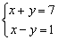
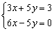

聯立二元一次方程式
程式編寫日期: 2006年9月17日
程式(30步)
| 1 | ENT | 2. | Kin 2 | 3. | Kin 3 | 4. | ENT | 5. | Kin 4 |
| 6. | Kin 5 | 7. | ENT | 8. | Kin 6 | 9. | Kin 1 | 10. | ENT |
| 11. | Kin × 5 | 12. | Kin × 6 | 13. | ENT | 14. | Kin × 3 | 15. | Kin × 1 |
| 16. | ENT | 17. | Kin × 2 | 18. | Kin × 4 | 19. | Kout 5 | 20. | Kin - 3 |
| 21. | Kout 4 | 22. | Kin - 1 | 23. | Kout 6 | 24. | Kin - 2 | 25. | Kout 3 |
| 26. | Kin ÷ 1 | 27. | Kin ÷ 2 | 28. | Kout 1 | 29. | HLT | 30. | Kout 2 |
LRN 模式輸入程式(供 fx-3600PV及fx-3800P使用，程式長度: 30步)
| ENT 1 | Kin 2 | Kin 3 | ENT 0 | Kin 4 |
| Kin 5 | ENT 2 | Kin 6 | Kin 1 | ENT 0 |
| Kin × 5 | Kin × 6 | ENT 1 | Kin × 3 | Kin × 1 |
| ENT 3 | Kin × 2 | Kin × 4 | Kout 5 | Kin - 3 |
| Kout 4 | Kin - 1 | Kout 6 | Kin - 2 | Kout 3 |
| Kin ÷ 1 | Kin ÷ 2 | Kout 1 | HLT | Kout 2 |
| MODE . |
例題1: 解聯立方程 :

按 P1 再按 1 RUN 1 RUN 7 RUN 1 RUN 1 +/- RUN 1 RUN (顯示4) RUN (顯示3)
因此解答為 x = 4 及 y = 3.
程式執行完結後，按 Kout 1 、Kout 2及Kout 3分別顯示x的值、y的值及方程組行列式的值。
若果希望將答案轉化為分數，可以配合小數轉換分數程式(II)或小數轉換分數程式(III)
例題2: 解聯立方程 :

按 P1 再按 3 RUN 5 RUN 3 RUN 6 RUN 5 +/- RUN
0 RUN (顯示 x值為0.333333333) RUN (顯示 y值為0.4)
再按 P2 (顯示
y 的分子為2) RUN (顯示 y 的分母為5)再按 Kout 1 P2 (顯示 x 的分子為1) RUN (顯示 x 的分母為3)
因此解答為 x = 1/3 及 y = 2/5.
注意: 使用小數轉換分數(II/III)第一個程式後，y值的記憶(K2)不能保留 ，若要保留數值，請於執行程式前儲存於記憶M之中。使用小數轉換分數(II/III)的第二個程式則不影響答案的記憶。